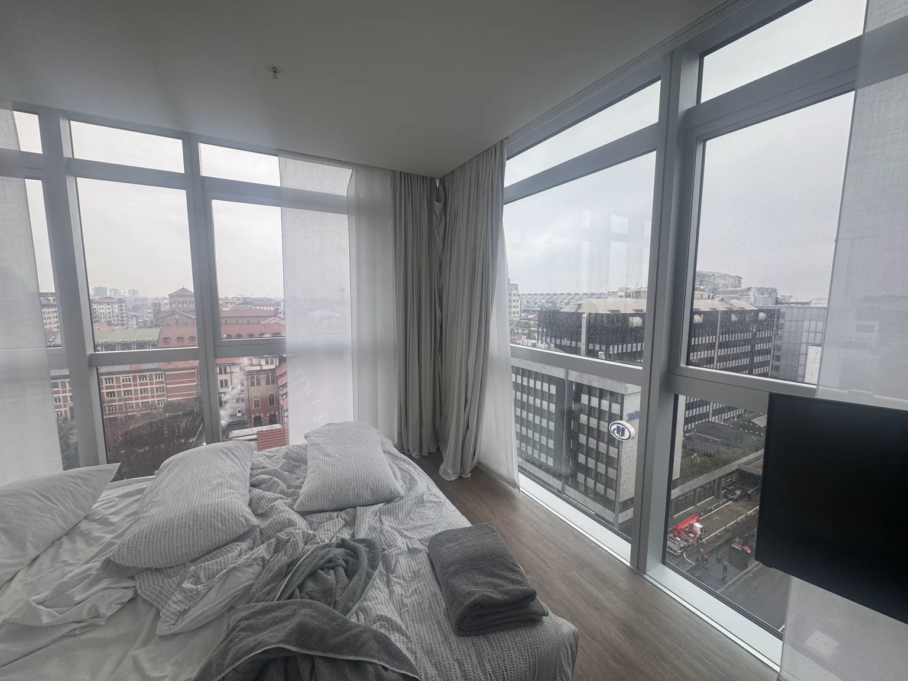
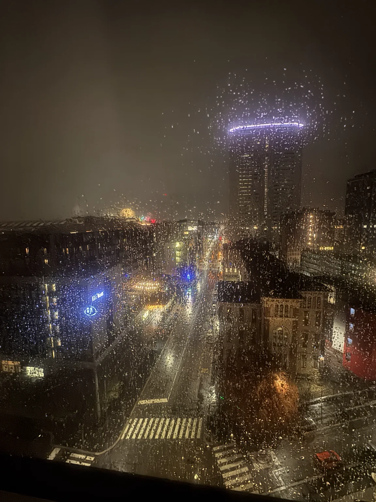
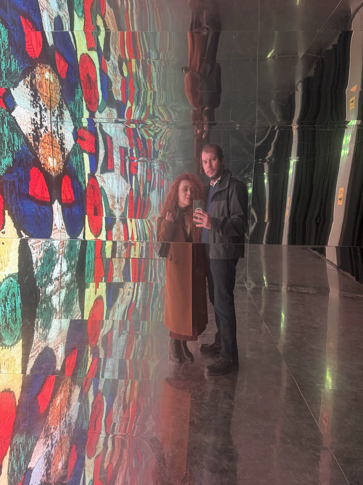
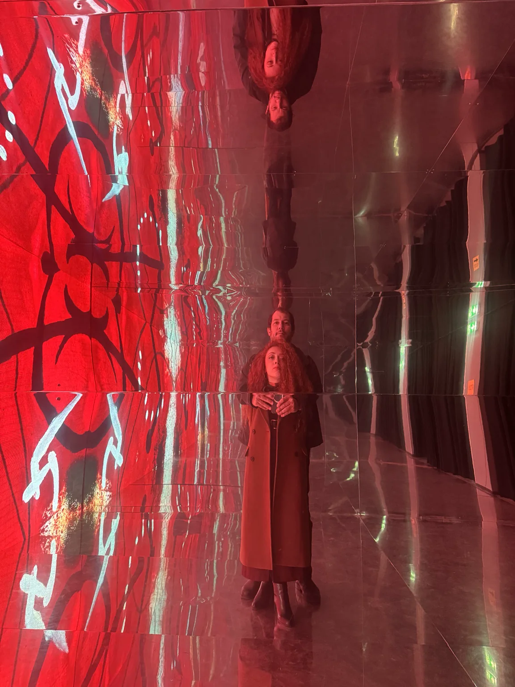
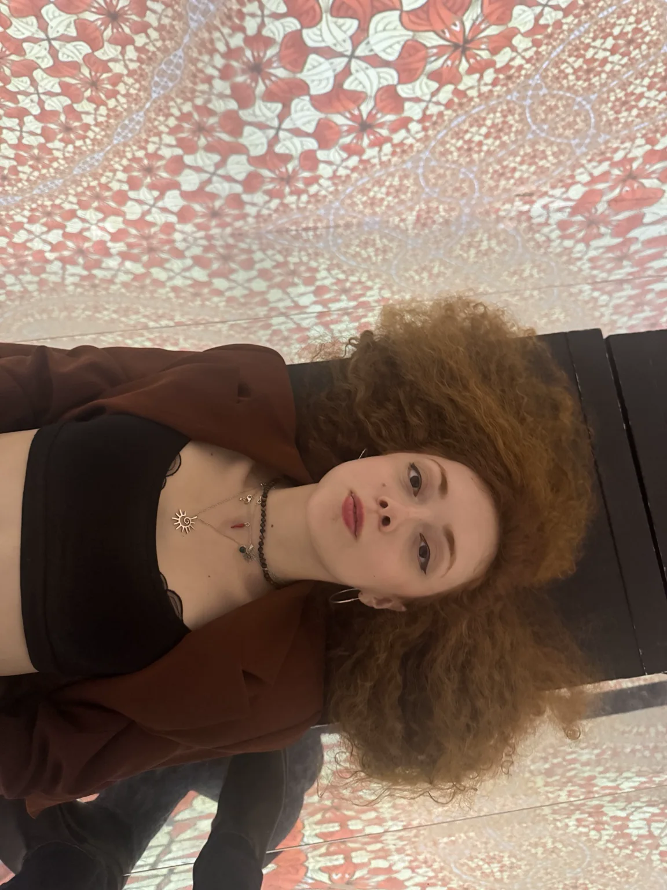
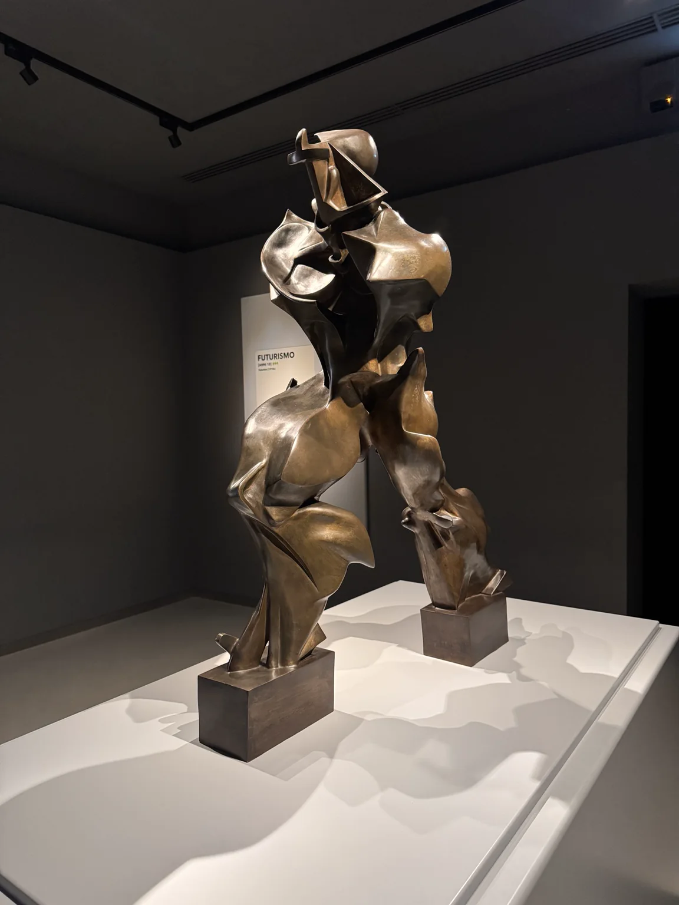
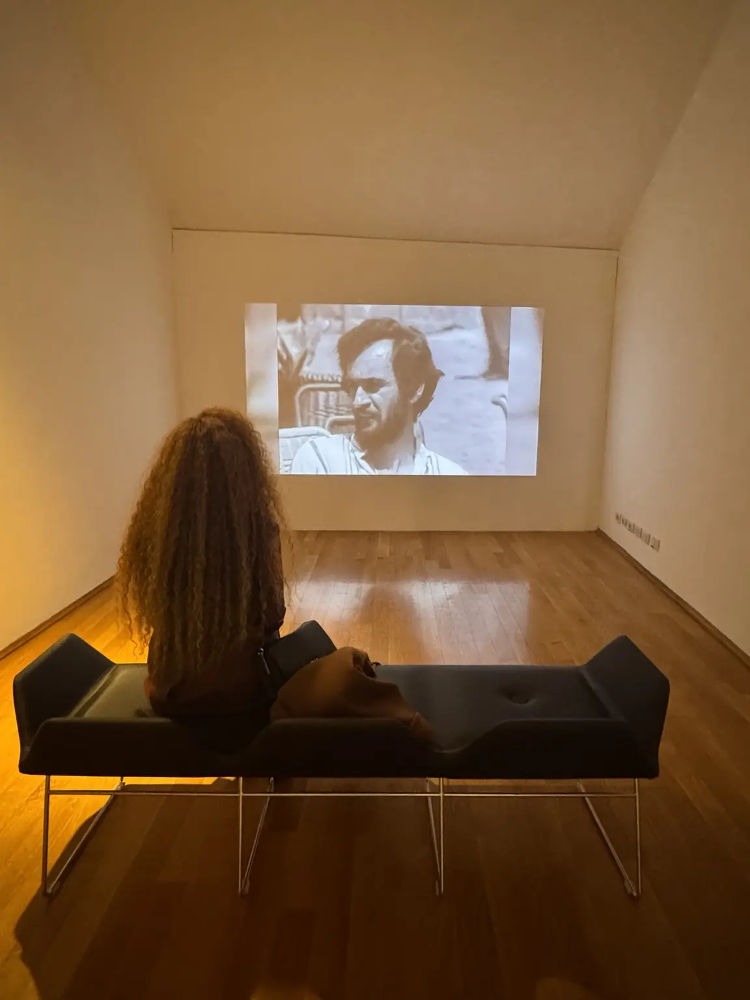
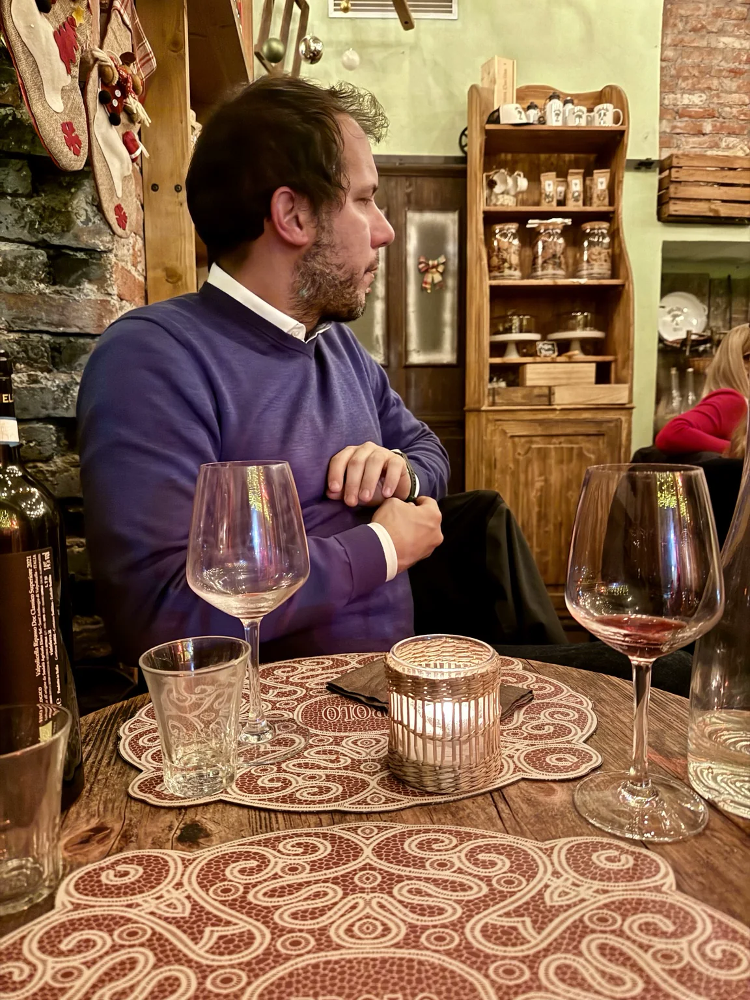
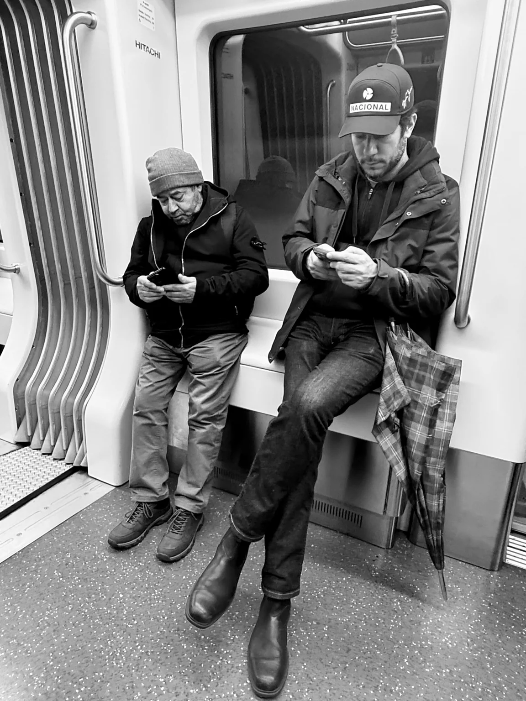

Dicembre 2025 · il primo viaggio
Milano
Una città vista attraverso vetri bagnati, sale buie e immagini in movimento. Il nostro primo capitolo insieme.
45°28′ N · 9°11′ EMilano non è stata soltanto la città fuori: per buona parte del viaggio l’abbiamo guardata attraverso superfici — finestre, specchi, schermi e proiezioni. La pioggia ha fatto il resto, trasformando le luci in una seconda architettura.
La città riflessa

Entrare nelle immagini



Il futuro, cento anni fa


La sala in movimento
Le immagini non restano ferme: cambiano insieme a chi le attraversa.
Fuori dalle sale

